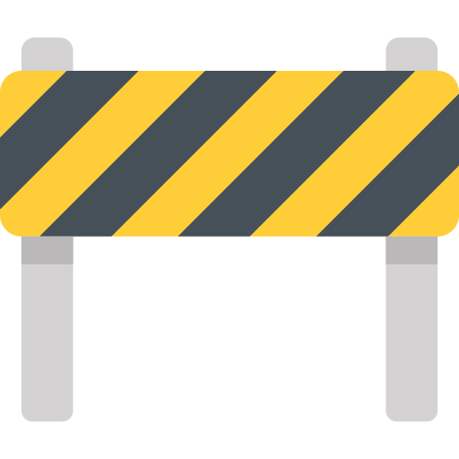

<div class="container under-construction__container">
  <div (click)="location.back()" class="under-construction__navigation under-construction__navigation--back">
    <i class="material-icons">arrow_back</i> Back to Previous Page
  </div>
  <div class="under-construction__content text--center">
    <h1 class="heading heading-1 text--dark">UNDER CONSTRUCTION</h1>
    <h3 class="heading heading-3 text--dark">Tune Back In Later for Additional Details</h3>
    
    Icons made by <a href="https://www.flaticon.com/authors/freepik" title="Freepik">Freepik</a> from <a href="https://www.flaticon.com/" title="Flaticon"> www.flaticon.com</a>
  </div>
</div>
